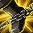
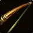
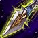
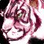
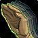
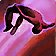
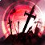
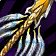
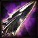
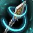

Balance Changes



Wingclip no longer does damage.

Auto shot will automatically enable if the Hunter steps out of melee range while in combat with the target.

Scorpid Sting now reduces the target's chance to hit with melee and ranged attacks by 3% for 20 sec.

Pets now have their own talent trees and can learn talents in one of three trees depending on their creature family. Pets gain talent points starting at level 20 and earn an extra talent point every 4 levels.

Stable masters can now be visited to recover lost pets. Stable masters can now also accommodate two additional pets.

Disengage has been reworked:

Rapid Fire has been updated into Rapid Killing:
New Spells and Abilities

Steady Shot is now trainable at level 30:
Silencing Shot is now trainable at level 60:
Misdirection is now trainable at level 50:
 Hero's Journey
Hero's Journey
 labels the expansion Blizzard made that change. labels an idea Blizzard made during SoD. labels a new idea I came up with.
labels the expansion Blizzard made that change. labels an idea Blizzard made during SoD. labels a new idea I came up with.